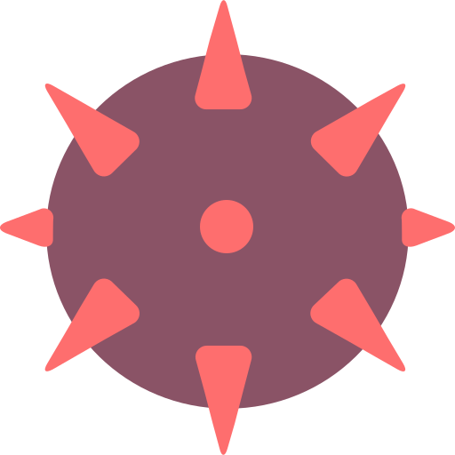
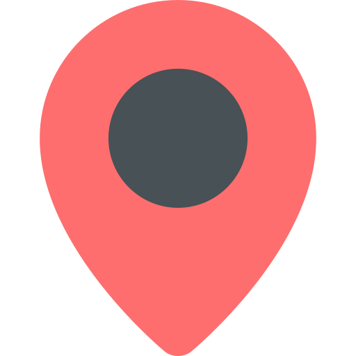

There are mines hidden underneath tiles on the map.
Your job is to uncover all of the tiles that do not have mines underneath them.
Some tiles contain numbers.
These numbers let you know how many mines are underneath nearby tiles.

Once you've determined the location of a mine, you can mark it with a flag.
Flagged tiles are unclickable, so you don't accidentally click the mine.
Easy
(WinMine 1990 - 1998)
(WinMine 2000 +)
(Something New!)
Intermediate
(WinMine 1990 +)
Expert
(Mines 2.9 Beta)
(WinMine 1990 +)